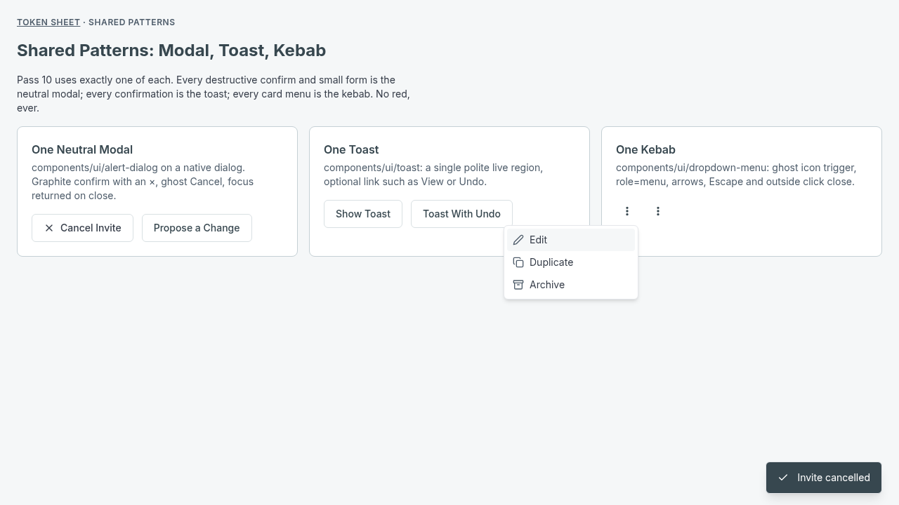

Built (v2.0.0-rc1.2) · glossary deltas openVisitorInitiatorCounterparty
Core Concepts
The handful of words AlignSynch uses, and what each one means for you.
AlignSynch uses a few words on purpose, and always the same way. Once you know these, every screen reads the same.
At a Glance
| Word | What it means |
|---|---|
| Relationship | Two people, one template’s Aspects, and everything that follows |
| Initiator | The person who starts the relationship and sends the invite |
| Counterparty | The person who was invited. They never pay |
| Template | A ready-made set of Aspects for a kind of relationship |
| Aspect | One question both of you answer on the 1–5 scale, with a left label (1) and a right label (5) |
| Stage | One of six steps: 1 Details, 2 Settings, 3 Aspects, 4 Account, 5 Invite, 6 Align |
| Align | Stage 6: both answers side by side, with a status for each Aspect |
| Opinions Mode | Basic (Feel and Wish) or Advanced (adds Think and Guess) |
| Alignment Setting | Soft tolerates a Small Gap; Full accepts only In Synch |
| In Synch · Small Gap · Gap | The three statuses: ✓ the same, ≈ one step apart, ⚑ further apart |
| Discussion | The thread beside your results |
| Paused | Stage 6 is on hold. Everything stays readable, nothing is lost |
How It Works
Status is always an icon plus a word
You’ll never have to decode a colour. Each status has its icon and its word, and nothing is ever red.

Design system · status patterns
The 1–5 scale is the same everywhere
Every Aspect has a left label (what a 1 means) and a right label (what a 5 means). See The Answer Scale.
Good to Know
- The old v1 words are retired: “session”, “instance” and “quiz” don’t appear in v2 copy. See Retired Terms.
For the Build Team
What’s Built Today (main @ 601ce26, v2.0.0-rc1.2 plus #1235–#1237; each quote is on the cited line)
| Citation | Evidence | What it means |
|---|---|---|
data/pages/assessment-create.ts:595 |
“Soft tolerates a Small Gap (1); Full accepts only In Synch.” | The Alignment Setting definition. |
data/pages/assessment-create.ts:585 |
”{ id: “mode-basic-help”, label: “Two Opinion questions per Aspect.” }” | Basic Mode. |
data/pages/assessment-create.ts:586 |
”{ id: “mode-advanced-help”, label: “Four Opinion questions per Aspect.” }” | Advanced Mode. |
content/stages.ts:104 |
“export const STAGE_LABELS: Record |
An older four-stage ladder (Invited, Connected, Sharing, Aligned) still lives in code beside the v2 six stages. |
data/pages/assessment-accept.ts:28 |
“heading: “Review and accept this session”,” | The retired word “session” is still on a v1-era screen. |
Open deltas: retire the four-stage ladder labels from any v2 surface; replace “session” on the accept screen.
References
| Shot | Source | Original |
|---|---|---|
| status-patterns-desktop | Bundle 09 | spec-design-v2-bundles/09-spec-design-system-tokens-v2/reference/patterns-1280.png |